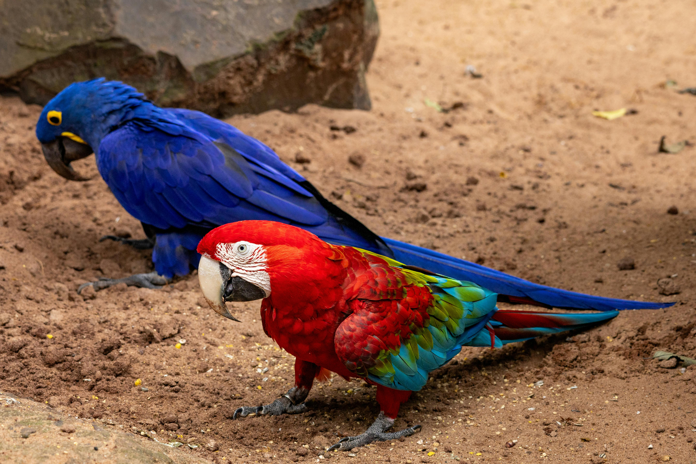

About this site
Blue and red parrots on their natural habitat. Source:Pexels
Web developer Julia Flach is concerned that people don’t fully understand the big impact of deforestation in the Amazon rainforest. She has created this website to help raise awareness and educate others about the urgent need to protect this vital ecosystem, known as "the lungs of the world".